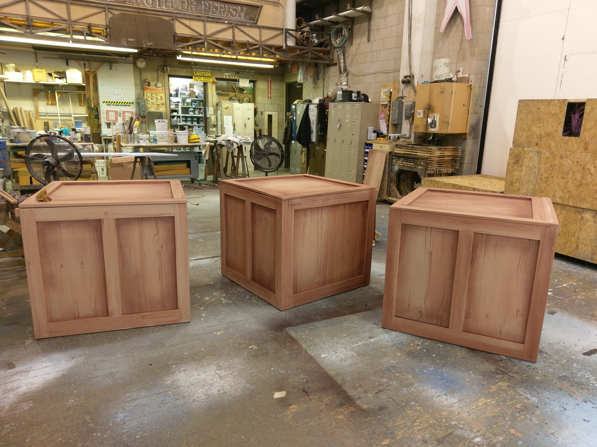
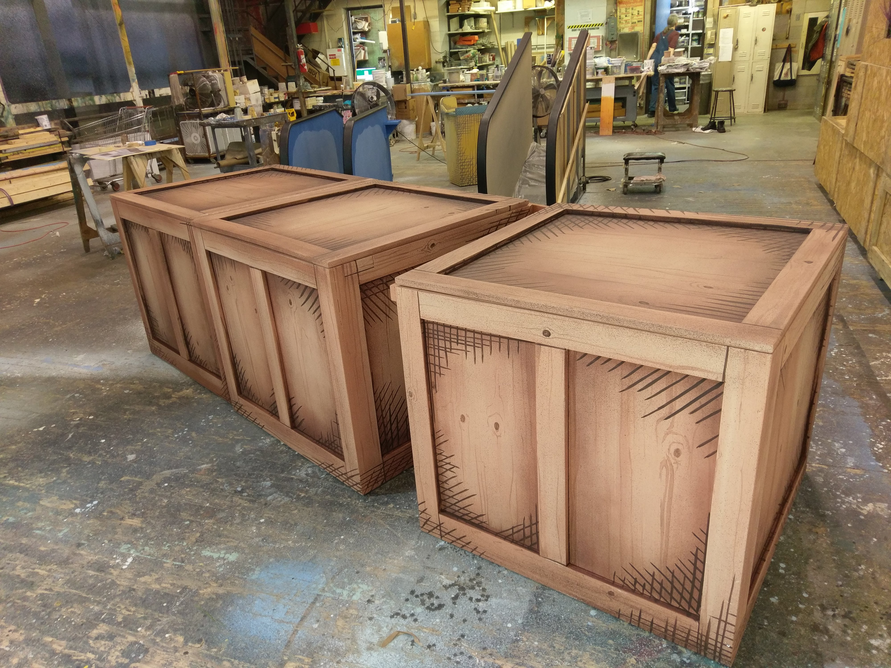
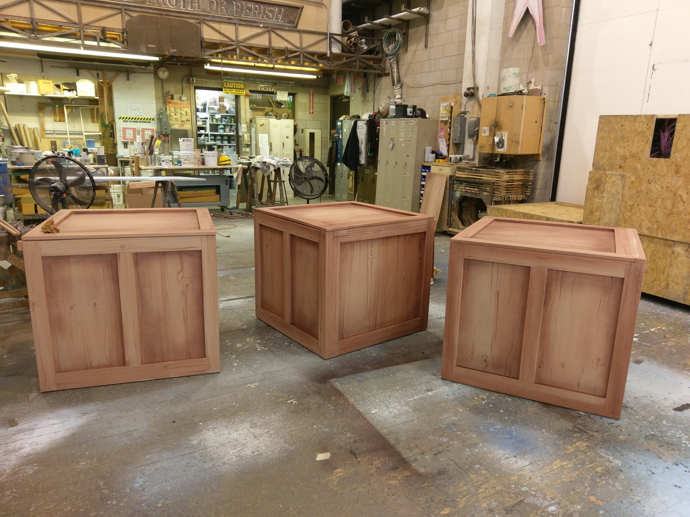
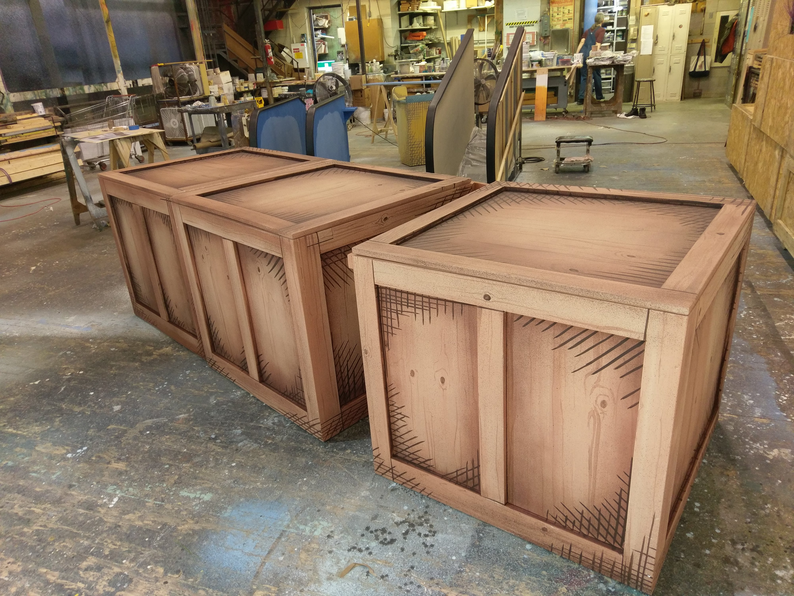
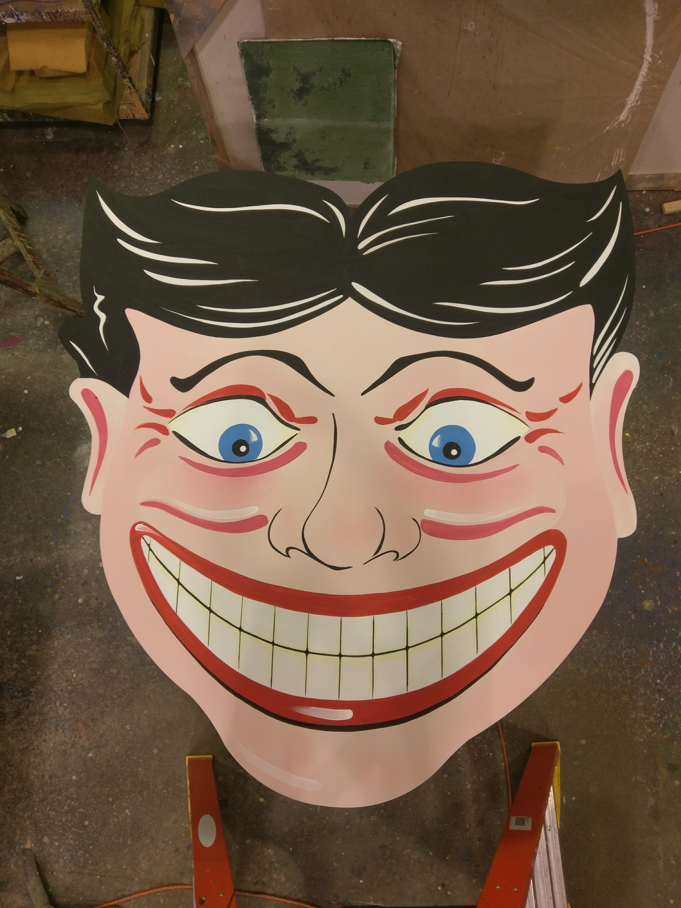
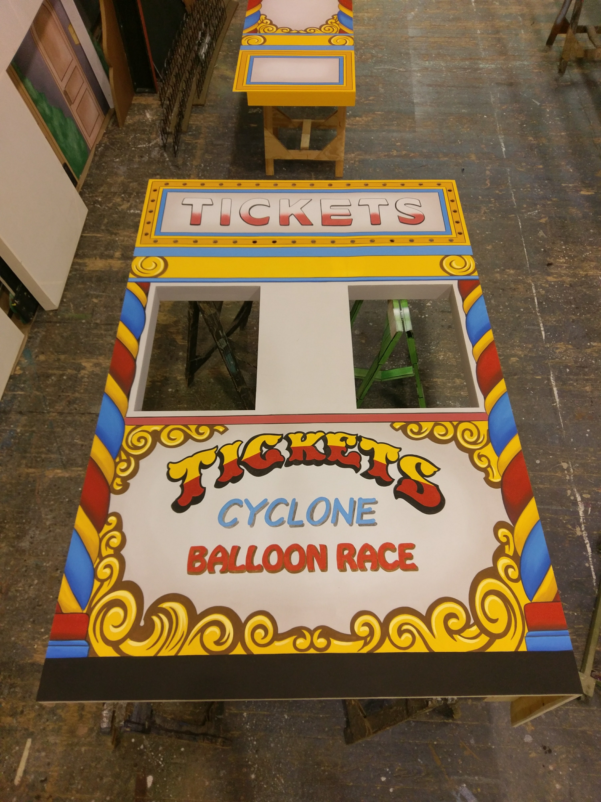
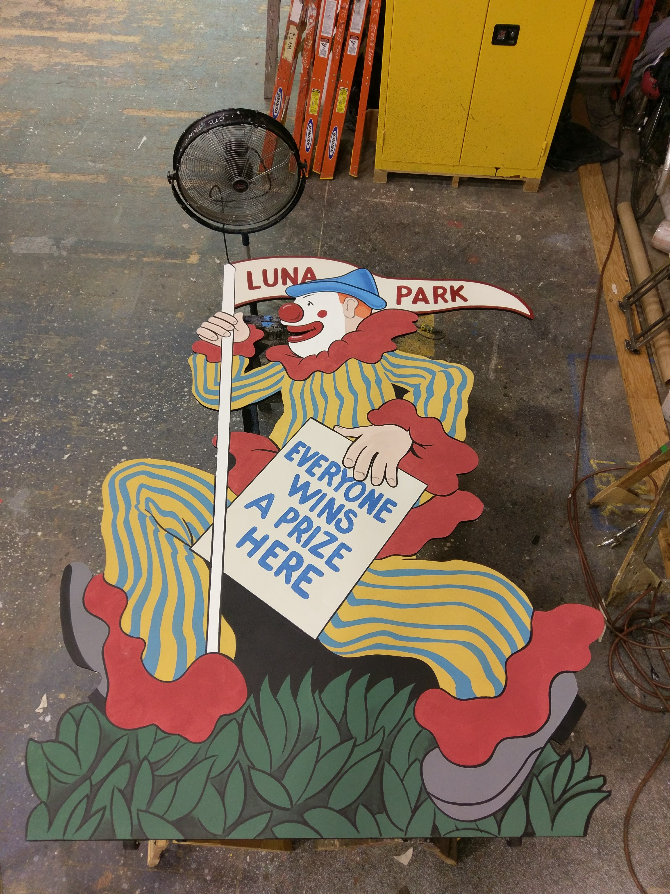

SET PIECES
Corduroy (2018)
Adapted by Barry Kornhauser
Directed by Peter C. Brosius
Design: Torry Bend
Paint: Mary Novodvorsky and Peter Baker
Children's Theatre Company
 



The Wiz (2017)
Adapted by William F. Brown
Directed by Lou Bellamy
Design: Vicki Smith
Paint: Mary Novodvorsky and Peter Baker
Children's Theatre Company


